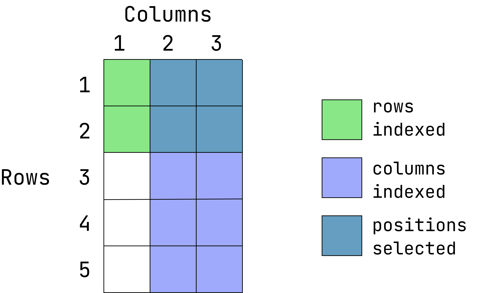
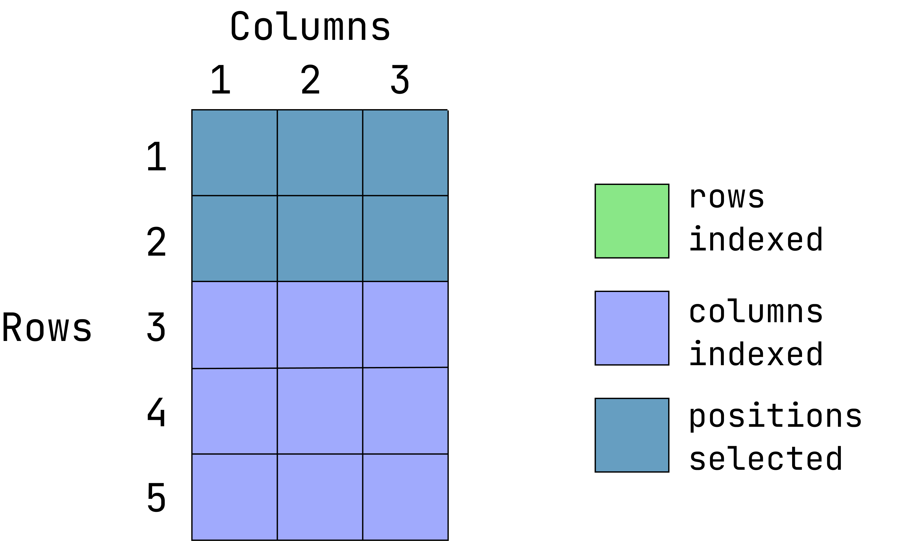
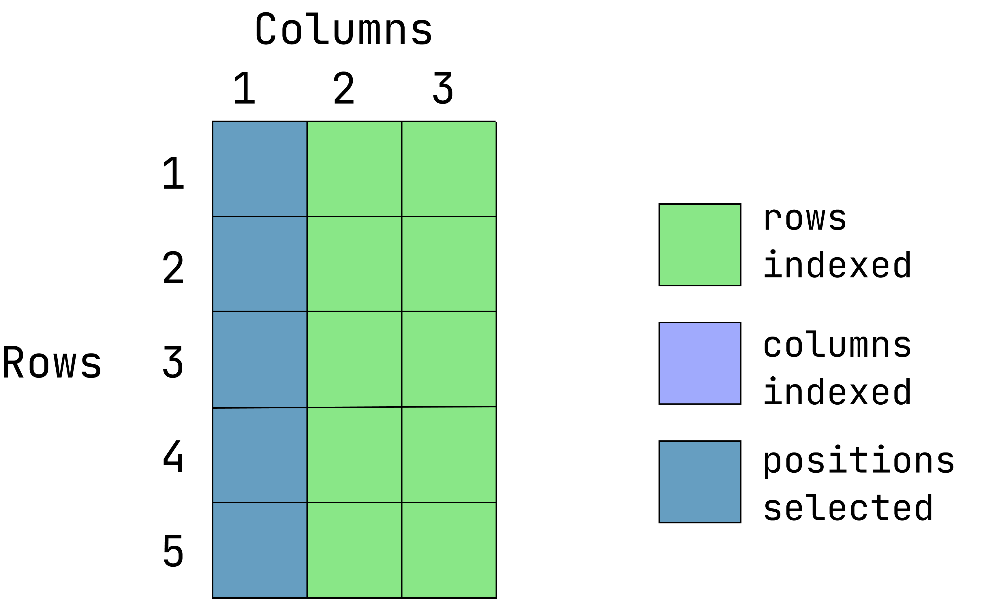
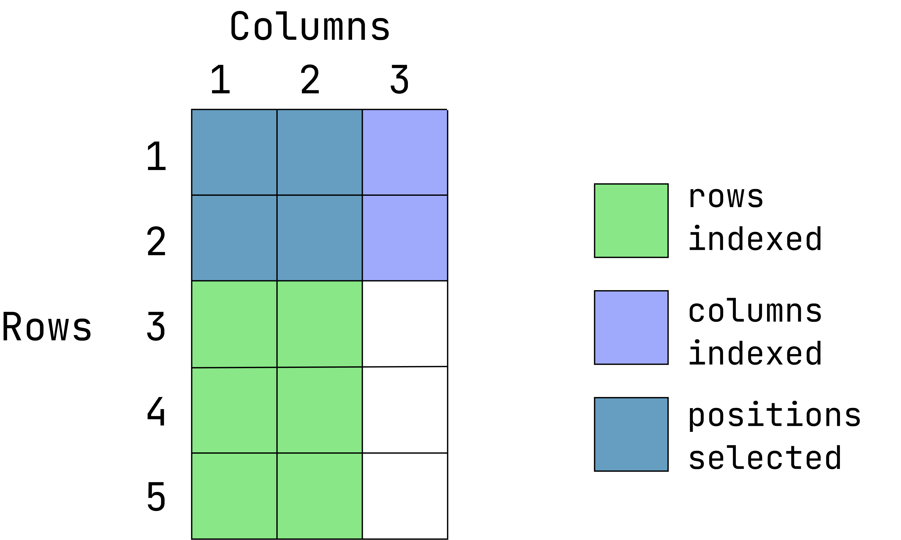
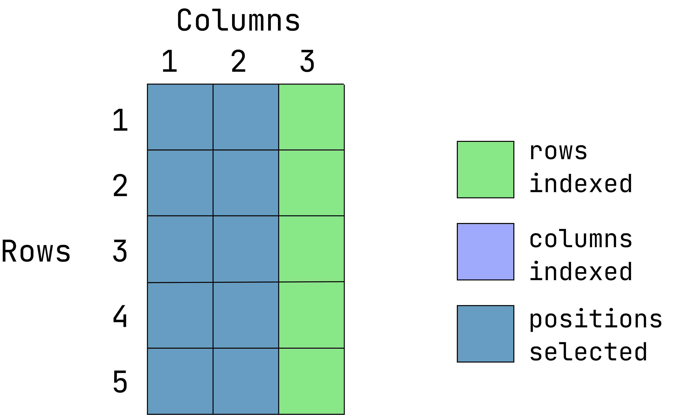
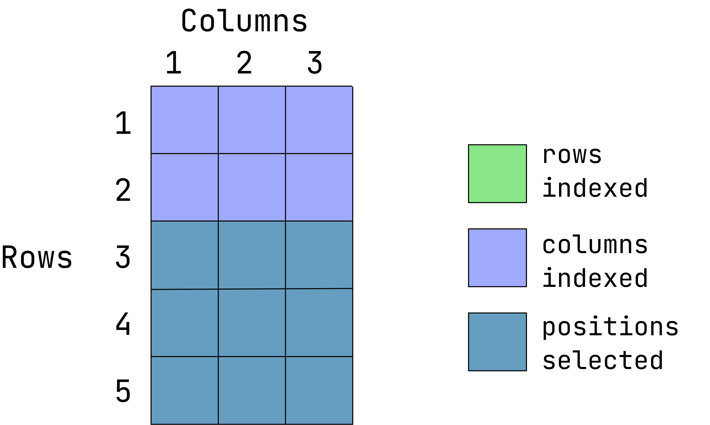
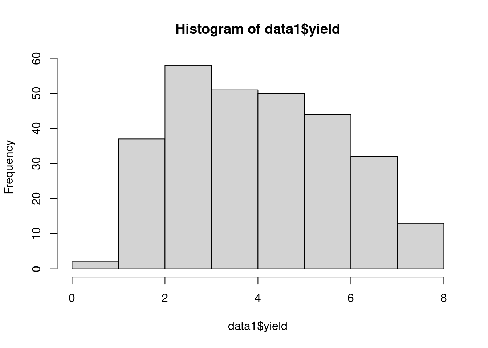
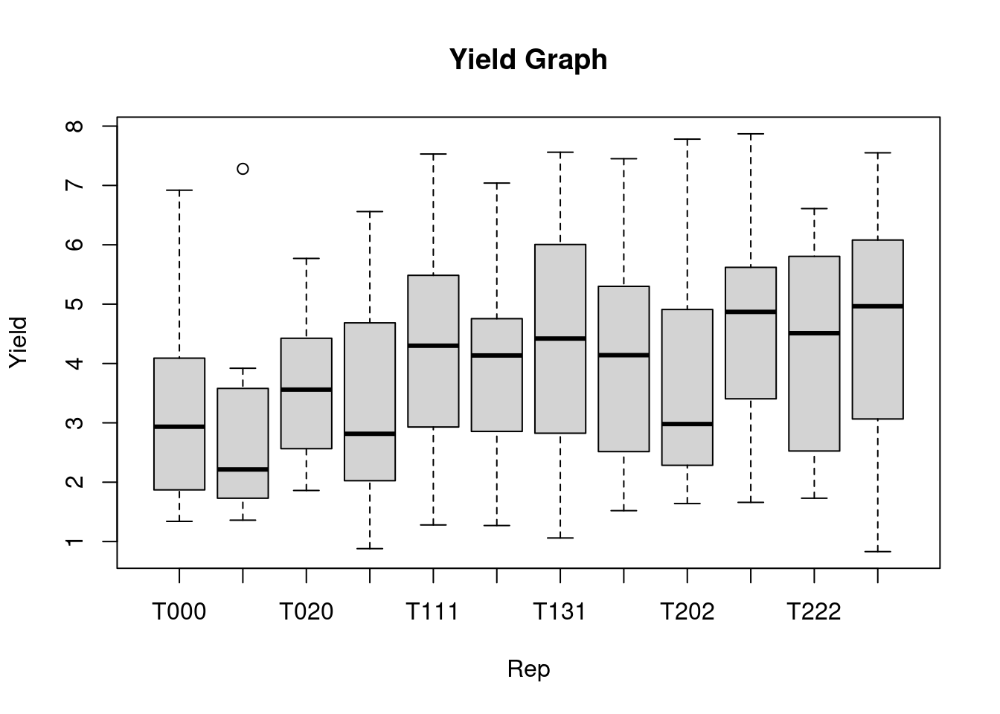
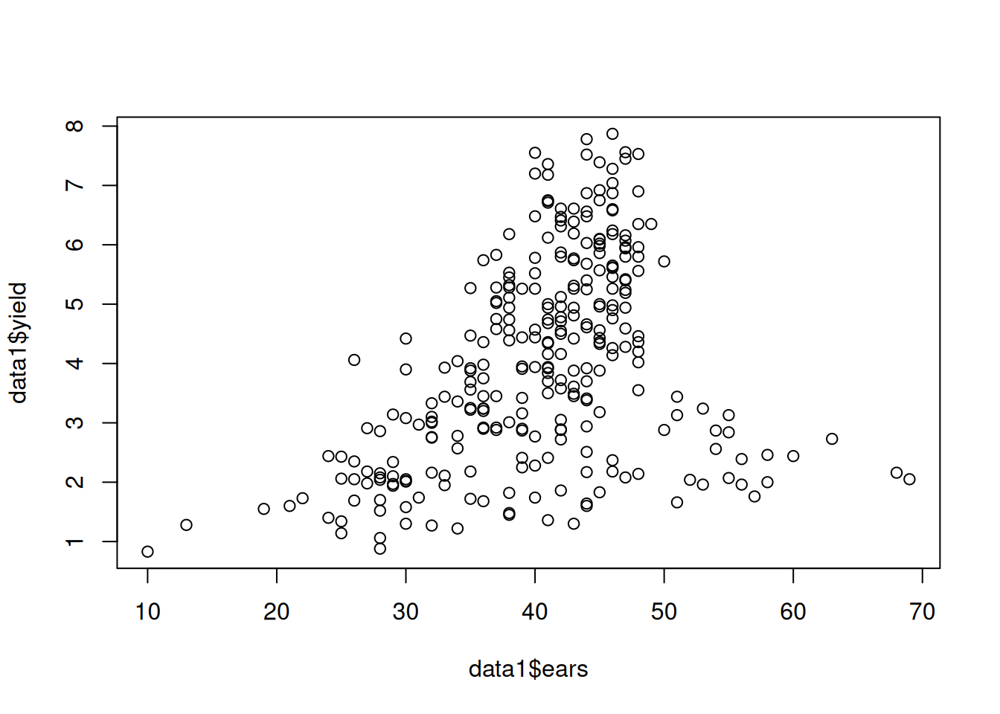
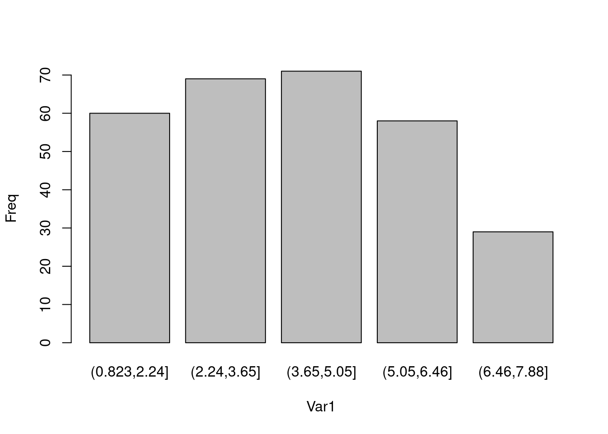

isle site block plot trt ears yield disease
1 Antigua DBAN B1 1 T111 42 4.96 TRUE
2 Antigua DBAN B1 2 T000 41 3.94 FALSE
3 Antigua DBAN B1 3 T311 49 6.35 FALSE
4 Antigua DBAN B1 4 T202 48 5.56 TRUE
5 Antigua DBAN B1 5 T111 45 5.36 FALSEGetting to Know Your Data in R
Learning Goals
At the end of this lesson, you should know:
- how to import data in R.
- several methods of data exploration in R.
- how to make cross tabulations of data.
- how to make histograms and pairwise plots in R.
Import a CSV file
This code read_csv() reads a CSV file named “caribbean_maize.csv” and assigns it to an object named “data1”.
The second line of code uses the “head” function to display the first 5 rows of the “data1” data frame. The View() will open the data set in new RStudio video where you can look up at the rows and columns.
data1 <- read.csv("data/caribbean_maize.csv")
View(data1)
Note
This data set has been imported and stored in an R session as a “data frame” (we will describe what that is later). This data frame only exists while your session is running. You can choose to save or export this object before closing your R session. Unless you purposely export this object and write over the original file, any changes you make to this object in an R session will not affect the original file that was imported.
There are several functions for enabling a quick examination of a data frame.
dim()gives the number of rows and columns;head()prints out the first 5 rows; andsummary()provides summaries of each column of a data frame.
dim(data1)[1] 288 8head(data1, 5) isle site block plot trt ears yield disease
1 Antigua DBAN B1 1 T111 42 4.96 TRUE
2 Antigua DBAN B1 2 T000 41 3.94 FALSE
3 Antigua DBAN B1 3 T311 49 6.35 FALSE
4 Antigua DBAN B1 4 T202 48 5.56 TRUE
5 Antigua DBAN B1 5 T111 45 5.36 FALSEsummary(data1) isle site block plot
Length:288 Length:288 Length:288 Min. : 1.00
Class :character Class :character Class :character 1st Qu.: 9.75
Mode :character Mode :character Mode :character Median :18.50
Mean :18.50
3rd Qu.:27.25
Max. :36.00
trt ears yield disease
Length:288 Min. :10.00 Min. :0.830 Mode :logical
Class :character 1st Qu.:36.00 1st Qu.:2.485 FALSE:143
Mode :character Median :41.00 Median :3.930 TRUE :145
Mean :40.43 Mean :4.033
3rd Qu.:45.00 3rd Qu.:5.400
Max. :69.00 Max. :7.870
NA's :1 NA's :1 Common Data Structures in R
Let’s consider how imported data sets are arranged into complex structures (that is, objects) that we can access and manipulate.
There are several data structures commonly used in R:
- vector
- data.frame
- matrix
- list
This lesson covers vectors and data frames, the two most common object types in R.
The vector
A vector in R is an object that contain one or more elements of the same type (types are covered later in this lesson). If we select a single column variable in data1, it will be returned to us as a vector.
Data in R data frames can be referred to by their column names using the notation dataframe$column_name:
Vector Exploration
- Ascertaining vector length
To find out how many items a vector has, use the length() function:
length(data1$site)[1] 288Note that this will also count missing values.
- Sorting vectors
To sort items in a vector alphabetically or numerically, use the sort() function:
sort(data1$yield) # sort a number [1] 0.83 0.88 1.06 1.14 1.22 1.27 1.28 1.30 1.30 1.34 1.36 1.40 1.45 1.48 1.52
[16] 1.55 1.58 1.60 1.60 1.64 1.66 1.68 1.69 1.70 1.72 1.73 1.74 1.74 1.76 1.82
[31] 1.83 1.86 1.94 1.95 1.96 1.96 1.97 1.98 2.00 2.01 2.02 2.04 2.04 2.05 2.05
[46] 2.05 2.06 2.07 2.08 2.08 2.10 2.11 2.14 2.15 2.16 2.16 2.17 2.18 2.18 2.18
[61] 2.25 2.28 2.34 2.35 2.37 2.39 2.41 2.41 2.43 2.44 2.44 2.46 2.51 2.56 2.57
[76] 2.72 2.73 2.75 2.76 2.77 2.78 2.84 2.86 2.87 2.87 2.88 2.88 2.88 2.89 2.90
[91] 2.90 2.91 2.92 2.92 2.94 2.97 3.00 3.01 3.02 3.05 3.08 3.10 3.13 3.13 3.14
[106] 3.16 3.18 3.20 3.22 3.24 3.24 3.24 3.25 3.33 3.36 3.38 3.41 3.42 3.44 3.44
[121] 3.45 3.45 3.45 3.49 3.50 3.55 3.56 3.58 3.61 3.69 3.70 3.70 3.72 3.75 3.84
[136] 3.88 3.88 3.88 3.90 3.91 3.92 3.92 3.92 3.93 3.94 3.94 3.95 3.98 4.02 4.04
[151] 4.06 4.14 4.16 4.16 4.20 4.26 4.28 4.33 4.34 4.36 4.36 4.36 4.36 4.39 4.42
[166] 4.42 4.43 4.44 4.44 4.46 4.47 4.50 4.55 4.56 4.56 4.57 4.58 4.59 4.61 4.66
[181] 4.68 4.71 4.74 4.74 4.75 4.76 4.78 4.81 4.90 4.94 4.94 4.94 4.94 4.96 4.96
[196] 4.98 5.00 5.02 5.05 5.11 5.12 5.19 5.24 5.25 5.26 5.26 5.26 5.26 5.27 5.28
[211] 5.28 5.31 5.32 5.36 5.40 5.40 5.42 5.45 5.46 5.52 5.53 5.56 5.57 5.61 5.62
[226] 5.65 5.68 5.72 5.74 5.74 5.77 5.78 5.80 5.80 5.80 5.83 5.86 5.87 5.94 5.96
[241] 5.96 5.98 6.02 6.03 6.07 6.09 6.10 6.12 6.16 6.18 6.18 6.19 6.24 6.31 6.35
[256] 6.35 6.39 6.41 6.47 6.48 6.48 6.56 6.58 6.60 6.61 6.61 6.71 6.74 6.75 6.75
[271] 6.87 6.87 6.90 6.92 7.04 7.18 7.20 7.28 7.36 7.39 7.45 7.52 7.53 7.55 7.56
[286] 7.78 7.87sort(data1$site) # Sort a character [1] "DBAN" "DBAN" "DBAN" "DBAN" "DBAN" "DBAN" "DBAN" "DBAN" "DBAN" "DBAN"
[11] "DBAN" "DBAN" "DBAN" "DBAN" "DBAN" "DBAN" "DBAN" "DBAN" "DBAN" "DBAN"
[21] "DBAN" "DBAN" "DBAN" "DBAN" "DBAN" "DBAN" "DBAN" "DBAN" "DBAN" "DBAN"
[31] "DBAN" "DBAN" "DBAN" "DBAN" "DBAN" "DBAN" "LFAN" "LFAN" "LFAN" "LFAN"
[41] "LFAN" "LFAN" "LFAN" "LFAN" "LFAN" "LFAN" "LFAN" "LFAN" "LFAN" "LFAN"
[51] "LFAN" "LFAN" "LFAN" "LFAN" "LFAN" "LFAN" "LFAN" "LFAN" "LFAN" "LFAN"
[61] "LFAN" "LFAN" "LFAN" "LFAN" "LFAN" "LFAN" "LFAN" "LFAN" "LFAN" "LFAN"
[71] "LFAN" "LFAN" "NSAN" "NSAN" "NSAN" "NSAN" "NSAN" "NSAN" "NSAN" "NSAN"
[81] "NSAN" "NSAN" "NSAN" "NSAN" "NSAN" "NSAN" "NSAN" "NSAN" "NSAN" "NSAN"
[91] "NSAN" "NSAN" "NSAN" "NSAN" "NSAN" "NSAN" "NSAN" "NSAN" "NSAN" "NSAN"
[101] "NSAN" "NSAN" "NSAN" "NSAN" "NSAN" "NSAN" "NSAN" "NSAN" "ORAN" "ORAN"
[111] "ORAN" "ORAN" "ORAN" "ORAN" "ORAN" "ORAN" "ORAN" "ORAN" "ORAN" "ORAN"
[121] "ORAN" "ORAN" "ORAN" "ORAN" "ORAN" "ORAN" "ORAN" "ORAN" "ORAN" "ORAN"
[131] "ORAN" "ORAN" "ORAN" "ORAN" "ORAN" "ORAN" "ORAN" "ORAN" "ORAN" "ORAN"
[141] "ORAN" "ORAN" "ORAN" "ORAN" "OVAN" "OVAN" "OVAN" "OVAN" "OVAN" "OVAN"
[151] "OVAN" "OVAN" "OVAN" "OVAN" "OVAN" "OVAN" "OVAN" "OVAN" "OVAN" "OVAN"
[161] "OVAN" "OVAN" "OVAN" "OVAN" "OVAN" "OVAN" "OVAN" "OVAN" "OVAN" "OVAN"
[171] "OVAN" "OVAN" "OVAN" "OVAN" "OVAN" "OVAN" "OVAN" "OVAN" "OVAN" "OVAN"
[181] "TEAN" "TEAN" "TEAN" "TEAN" "TEAN" "TEAN" "TEAN" "TEAN" "TEAN" "TEAN"
[191] "TEAN" "TEAN" "TEAN" "TEAN" "TEAN" "TEAN" "TEAN" "TEAN" "TEAN" "TEAN"
[201] "TEAN" "TEAN" "TEAN" "TEAN" "TEAN" "TEAN" "TEAN" "TEAN" "TEAN" "TEAN"
[211] "TEAN" "TEAN" "TEAN" "TEAN" "TEAN" "TEAN" "WEAN" "WEAN" "WEAN" "WEAN"
[221] "WEAN" "WEAN" "WEAN" "WEAN" "WEAN" "WEAN" "WEAN" "WEAN" "WEAN" "WEAN"
[231] "WEAN" "WEAN" "WEAN" "WEAN" "WEAN" "WEAN" "WEAN" "WEAN" "WEAN" "WEAN"
[241] "WEAN" "WEAN" "WEAN" "WEAN" "WEAN" "WEAN" "WEAN" "WEAN" "WEAN" "WEAN"
[251] "WEAN" "WEAN" "WLAN" "WLAN" "WLAN" "WLAN" "WLAN" "WLAN" "WLAN" "WLAN"
[261] "WLAN" "WLAN" "WLAN" "WLAN" "WLAN" "WLAN" "WLAN" "WLAN" "WLAN" "WLAN"
[271] "WLAN" "WLAN" "WLAN" "WLAN" "WLAN" "WLAN" "WLAN" "WLAN" "WLAN" "WLAN"
[281] "WLAN" "WLAN" "WLAN" "WLAN" "WLAN" "WLAN" "WLAN" "WLAN"- Finding unique values in a vector
For ‘character’ variables with repeat information, sometimes it is more helpful to only look at unique values:
unique(data1$site)[1] "DBAN" "LFAN" "NSAN" "ORAN" "OVAN" "TEAN" "WEAN" "WLAN"- Counting unique values in a vector:
table(data1$site)
DBAN LFAN NSAN ORAN OVAN TEAN WEAN WLAN
36 36 36 36 36 36 36 36 This also works across multiple vectors:
table(data1$site, data1$isle)
Antigua
DBAN 36
LFAN 36
NSAN 36
ORAN 36
OVAN 36
TEAN 36
WEAN 36
WLAN 36- Vector summaries information
You can also look at summaries for individual vectors:
# mean
mean(data1$yield, na.rm = TRUE) # the na.rm tells R to ignore missing data[1] 4.033275# minimum
min(data1$yield, na.rm = TRUE)[1] 0.83# maximum
max(data1$yield, na.rm = TRUE)[1] 7.87# median
median(data1$yield, na.rm = TRUE)[1] 3.93# variance
var(data1$yield, na.rm = TRUE)[1] 3.021442# standard deviation
sd(data1$yield, na.rm = TRUE)[1] 1.73823# sum all yield data
sum(data1$yield, na.rm = TRUE)[1] 1157.55Accessing Vectors
You can access the vector items by referring to its index number inside brackets []. The first item has index 1, the second item has index 2, and so on: Multiple item can also be indexed: x[c(1,5)]. If an index position, it repeated, that item will be returned as often as it is called:
# look at one position
data1$yield[5][1] 5.36# look at multiple positions
data1$yield[c(2,5)][1] 3.94 5.36We can use this information to replace information in a vector
data1$yield[5] <- 5 #(original value is 5.36)Indexing accepts numeric/integer vectors, so you can use a sequence (3:10), or concatenated positions (c(1, 2, 5, 10)), or a combination of both (c(1:10, 13)).
Assigning Vectors to Objects
Vectors can be indexed and assigned to a new object.
yield_ <- data1$yield
site_ <- data1$siteThe columns called “yield” and “site” are returned as a vector and assigned to new objects.
These new objects can be examined and manipulated the same as if they were indexed (e.g. mean(yield, na.rm = TRUE), table(site_))
We can also create new vectors from the original vectors
log_yield = log(data1$yield)
yield_pi = data1$yield*3.14
yield_sqrt = sqrt(data1$yield)
ear_sqr = data1$ears^2You can also add/multiply/subtract two columns of same data type and of same length. Let’s create a new vector named ‘var2’ as a product of ‘yield’ and ‘ears’ from data1.
yield_per_ear = data1$yield / data1$ears
yield_ear <- data1$yield * data1$earsR is naturally vectorized, which means that when you conduct a math operation on a vector, it will be repeated across the entire vector.
Any vector whose length matches the number of rows in a data frame can be added to that data frame. When we do this, we assume each is in the correct order. Since ‘yield_ear’ is directly from a vectorized operation done on ‘data1’, that assumption is correctly made.
data1$yield_x_ear <- yield_earR also has a rich set of math operators available. You can learn more about using math operators here.
The Data Frame
A data frame is a collection of the vectors of same length. This is the most widely used and important data structure in R. Each vector is a single data type, but different vectors can be different data types (e.g. character or numeric) in a data frame. This is similar to a typical workbook you might open in Excel or another spreadsheet program.
In this example, data1 is a data frame which consists of different vectors (isle, site, block, etc) that are each their own data type (character, integer, numeric, logical).
A data frame has attributes for:
nrownumber of rowsncolnumber of columnscolnamescolumn namesrownamesrow names (if none are provided, R will generate integer row names starting at 1)
Check the number of rows and columns in a data frame:
nrow(data1)[1] 288ncol(data1); length(data1)[1] 9[1] 9dim(data1) # tells us row and column lengths in one command[1] 288 9rownames(data1) [1] "1" "2" "3" "4" "5" "6" "7" "8" "9" "10" "11" "12"
[13] "13" "14" "15" "16" "17" "18" "19" "20" "21" "22" "23" "24"
[25] "25" "26" "27" "28" "29" "30" "31" "32" "33" "34" "35" "36"
[37] "37" "38" "39" "40" "41" "42" "43" "44" "45" "46" "47" "48"
[49] "49" "50" "51" "52" "53" "54" "55" "56" "57" "58" "59" "60"
[61] "61" "62" "63" "64" "65" "66" "67" "68" "69" "70" "71" "72"
[73] "73" "74" "75" "76" "77" "78" "79" "80" "81" "82" "83" "84"
[85] "85" "86" "87" "88" "89" "90" "91" "92" "93" "94" "95" "96"
[97] "97" "98" "99" "100" "101" "102" "103" "104" "105" "106" "107" "108"
[109] "109" "110" "111" "112" "113" "114" "115" "116" "117" "118" "119" "120"
[121] "121" "122" "123" "124" "125" "126" "127" "128" "129" "130" "131" "132"
[133] "133" "134" "135" "136" "137" "138" "139" "140" "141" "142" "143" "144"
[145] "145" "146" "147" "148" "149" "150" "151" "152" "153" "154" "155" "156"
[157] "157" "158" "159" "160" "161" "162" "163" "164" "165" "166" "167" "168"
[169] "169" "170" "171" "172" "173" "174" "175" "176" "177" "178" "179" "180"
[181] "181" "182" "183" "184" "185" "186" "187" "188" "189" "190" "191" "192"
[193] "193" "194" "195" "196" "197" "198" "199" "200" "201" "202" "203" "204"
[205] "205" "206" "207" "208" "209" "210" "211" "212" "213" "214" "215" "216"
[217] "217" "218" "219" "220" "221" "222" "223" "224" "225" "226" "227" "228"
[229] "229" "230" "231" "232" "233" "234" "235" "236" "237" "238" "239" "240"
[241] "241" "242" "243" "244" "245" "246" "247" "248" "249" "250" "251" "252"
[253] "253" "254" "255" "256" "257" "258" "259" "260" "261" "262" "263" "264"
[265] "265" "266" "267" "268" "269" "270" "271" "272" "273" "274" "275" "276"
[277] "277" "278" "279" "280" "281" "282" "283" "284" "285" "286" "287" "288"colnames(data1)[1] "isle" "site" "block" "plot" "trt"
[6] "ears" "yield" "disease" "yield_x_ear"
Tip
The rownames attribute can be set, but if it is not, it is automatically created within R from 1 to the total number of rows. Row names are a tricky attribute than many packages in R do not support. A function may toss out your row names without any warning!
In general, I do not recommend setting the row names attribute in data frames to anything other than the default values unless a package function specifically requires it.
Accessing items in a data frame
Earlier, we saw how we can use the $ notation to access any column (or vector) in a data frame. For example, to access the ‘block’ variable in our data1, you can use data1$block
A data set can also be indexed by numeric position. You can extract individual elements in a data frame by references the row and column position, my_dataframe[row, column], where the indexing begins at 1. So my_dataframe[1, 1] would extract the data point located in the first row and first column.
More examples:
- Extract the items located in the first 2 rows and 2 columns:
Visual of what we want:

This graphic is an overlay of green over blue, creating a dark teal color. The green represents rows indexed, the blue is columns indexed and the teal is the intersection between those two. If a color is not visible, that is because it is under the teal overlay.
data1[1:2, 2:3] site block
1 DBAN B1
2 DBAN B1- Extract the first two rows and all of the columns:

data1[1:2, ] isle site block plot trt ears yield disease yield_x_ear
1 Antigua DBAN B1 1 T111 42 4.96 TRUE 208.32
2 Antigua DBAN B1 2 T000 41 3.94 FALSE 161.54When the column position is left empty, all columns are returned
- Extract the entire first column and all rows:

data1[ ,1] [1] "Antigua" "Antigua" "Antigua" "Antigua" "Antigua" "Antigua" "Antigua"
[8] "Antigua" "Antigua" "Antigua" "Antigua" "Antigua" "Antigua" "Antigua"
[15] "Antigua" "Antigua" "Antigua" "Antigua" "Antigua" "Antigua" "Antigua"
[22] "Antigua" "Antigua" "Antigua" "Antigua" "Antigua" "Antigua" "Antigua"
[29] "Antigua" "Antigua" "Antigua" "Antigua" "Antigua" "Antigua" "Antigua"
[36] "Antigua" "Antigua" "Antigua" "Antigua" "Antigua" "Antigua" "Antigua"
[43] "Antigua" "Antigua" "Antigua" "Antigua" "Antigua" "Antigua" "Antigua"
[50] "Antigua" "Antigua" "Antigua" "Antigua" "Antigua" "Antigua" "Antigua"
[57] "Antigua" "Antigua" "Antigua" "Antigua" "Antigua" "Antigua" "Antigua"
[64] "Antigua" "Antigua" "Antigua" "Antigua" "Antigua" "Antigua" "Antigua"
[71] "Antigua" "Antigua" "Antigua" "Antigua" "Antigua" "Antigua" "Antigua"
[78] "Antigua" "Antigua" "Antigua" "Antigua" "Antigua" "Antigua" "Antigua"
[85] "Antigua" "Antigua" "Antigua" "Antigua" "Antigua" "Antigua" "Antigua"
[92] "Antigua" "Antigua" "Antigua" "Antigua" "Antigua" "Antigua" "Antigua"
[99] "Antigua" "Antigua" "Antigua" "Antigua" "Antigua" "Antigua" "Antigua"
[106] "Antigua" "Antigua" "Antigua" "Antigua" "Antigua" "Antigua" "Antigua"
[113] "Antigua" "Antigua" "Antigua" "Antigua" "Antigua" "Antigua" "Antigua"
[120] "Antigua" "Antigua" "Antigua" "Antigua" "Antigua" "Antigua" "Antigua"
[127] "Antigua" "Antigua" "Antigua" "Antigua" "Antigua" "Antigua" "Antigua"
[134] "Antigua" "Antigua" "Antigua" "Antigua" "Antigua" "Antigua" "Antigua"
[141] "Antigua" "Antigua" "Antigua" "Antigua" "Antigua" "Antigua" "Antigua"
[148] "Antigua" "Antigua" "Antigua" "Antigua" "Antigua" "Antigua" "Antigua"
[155] "Antigua" "Antigua" "Antigua" "Antigua" "Antigua" "Antigua" "Antigua"
[162] "Antigua" "Antigua" "Antigua" "Antigua" "Antigua" "Antigua" "Antigua"
[169] "Antigua" "Antigua" "Antigua" "Antigua" "Antigua" "Antigua" "Antigua"
[176] "Antigua" "Antigua" "Antigua" "Antigua" "Antigua" "Antigua" "Antigua"
[183] "Antigua" "Antigua" "Antigua" "Antigua" "Antigua" "Antigua" "Antigua"
[190] "Antigua" "Antigua" "Antigua" "Antigua" "Antigua" "Antigua" "Antigua"
[197] "Antigua" "Antigua" "Antigua" "Antigua" "Antigua" "Antigua" "Antigua"
[204] "Antigua" "Antigua" "Antigua" "Antigua" "Antigua" "Antigua" "Antigua"
[211] "Antigua" "Antigua" "Antigua" "Antigua" "Antigua" "Antigua" "Antigua"
[218] "Antigua" "Antigua" "Antigua" "Antigua" "Antigua" "Antigua" "Antigua"
[225] "Antigua" "Antigua" "Antigua" "Antigua" "Antigua" "Antigua" "Antigua"
[232] "Antigua" "Antigua" "Antigua" "Antigua" "Antigua" "Antigua" "Antigua"
[239] "Antigua" "Antigua" "Antigua" "Antigua" "Antigua" "Antigua" "Antigua"
[246] "Antigua" "Antigua" "Antigua" "Antigua" "Antigua" "Antigua" "Antigua"
[253] "Antigua" "Antigua" "Antigua" "Antigua" "Antigua" "Antigua" "Antigua"
[260] "Antigua" "Antigua" "Antigua" "Antigua" "Antigua" "Antigua" "Antigua"
[267] "Antigua" "Antigua" "Antigua" "Antigua" "Antigua" "Antigua" "Antigua"
[274] "Antigua" "Antigua" "Antigua" "Antigua" "Antigua" "Antigua" "Antigua"
[281] "Antigua" "Antigua" "Antigua" "Antigua" "Antigua" "Antigua" "Antigua"
[288] "Antigua"When the row position is left empty, all rows are returned.
- Extract the values located in the first 2 rows and first two columns:

data1[1:2, 1:2] isle site
1 Antigua DBAN
2 Antigua DBAN- Return everything except the third columns

data1[ ,-3] isle site plot trt ears yield disease yield_x_ear
1 Antigua DBAN 1 T111 42 4.96 TRUE 208.32
2 Antigua DBAN 2 T000 41 3.94 FALSE 161.54
3 Antigua DBAN 3 T311 49 6.35 FALSE 311.15
4 Antigua DBAN 4 T202 48 5.56 TRUE 266.88
5 Antigua DBAN 5 T111 45 5.00 FALSE 225.00
6 Antigua DBAN 6 T220 46 6.18 TRUE 284.28
7 Antigua DBAN 7 T113 42 4.71 TRUE 197.82
8 Antigua DBAN 8 T131 44 6.03 FALSE 265.32
9 Antigua DBAN 9 T022 42 2.88 FALSE 120.96
10 Antigua DBAN 10 T222 44 5.68 TRUE 249.92
11 Antigua DBAN 11 T311 42 5.80 FALSE 243.60
12 Antigua DBAN 12 T020 42 4.16 TRUE 174.72
13 Antigua DBAN 13 T200 46 4.90 TRUE 225.40
14 Antigua DBAN 14 T111 44 5.25 FALSE 231.00
15 Antigua DBAN 15 T131 48 5.80 FALSE 278.40
16 Antigua DBAN 16 T002 46 2.18 TRUE 100.28
17 Antigua DBAN 17 T111 48 4.36 FALSE 209.28
18 Antigua DBAN 18 T113 45 4.36 TRUE 196.20
19 Antigua DBAN 19 T131 43 4.81 TRUE 206.83
20 Antigua DBAN 20 T111 47 5.19 TRUE 243.93
21 Antigua DBAN 21 T311 47 5.96 TRUE 280.12
22 Antigua DBAN 22 T000 45 3.88 TRUE 174.60
23 Antigua DBAN 23 T220 50 5.72 TRUE 286.00
24 Antigua DBAN 24 T022 44 2.51 TRUE 110.44
25 Antigua DBAN 25 T111 47 4.94 TRUE 232.18
26 Antigua DBAN 26 T113 44 3.70 FALSE 162.80
27 Antigua DBAN 27 T202 40 2.77 FALSE 110.80
28 Antigua DBAN 28 T111 41 4.34 TRUE 177.94
29 Antigua DBAN 29 T200 45 4.33 FALSE 194.85
30 Antigua DBAN 30 T111 41 4.68 TRUE 191.88
31 Antigua DBAN 31 T113 46 4.76 TRUE 218.96
32 Antigua DBAN 32 T131 47 5.24 FALSE 246.28
33 Antigua DBAN 33 T020 42 1.86 FALSE 78.12
34 Antigua DBAN 34 T222 41 3.84 TRUE 157.44
35 Antigua DBAN 35 T002 41 1.36 FALSE 55.76
36 Antigua DBAN 36 T311 36 3.98 FALSE 143.28
37 Antigua LFAN 1 T111 37 2.92 FALSE 108.04
38 Antigua LFAN 2 T022 36 1.68 FALSE 60.48
39 Antigua LFAN 3 T113 42 4.50 FALSE 189.00
40 Antigua LFAN 4 T220 41 4.74 TRUE 194.34
41 Antigua LFAN 5 T202 40 4.44 FALSE 177.60
42 Antigua LFAN 6 T311 44 4.66 TRUE 205.04
43 Antigua LFAN 7 T111 44 2.94 TRUE 129.36
44 Antigua LFAN 8 T000 44 1.60 FALSE 70.40
45 Antigua LFAN 9 T131 38 1.82 FALSE 69.16
46 Antigua LFAN 10 T113 39 4.44 TRUE 173.16
47 Antigua LFAN 11 T222 40 5.78 FALSE 231.20
48 Antigua LFAN 12 T311 46 6.24 TRUE 287.04
49 Antigua LFAN 13 T111 47 5.40 TRUE 253.80
50 Antigua LFAN 14 T200 46 5.62 FALSE 258.52
51 Antigua LFAN 15 T002 35 1.72 FALSE 60.20
52 Antigua LFAN 16 T131 43 4.42 TRUE 190.06
53 Antigua LFAN 17 T111 46 4.14 FALSE 190.44
54 Antigua LFAN 18 T020 40 3.94 TRUE 157.60
55 Antigua LFAN 19 T220 41 5.00 TRUE 205.00
56 Antigua LFAN 20 T202 46 5.26 FALSE 241.96
57 Antigua LFAN 21 T000 36 2.90 FALSE 104.40
58 Antigua LFAN 22 T111 43 4.94 TRUE 212.42
59 Antigua LFAN 23 T113 45 4.43 FALSE 199.35
60 Antigua LFAN 24 T311 47 5.42 TRUE 254.74
61 Antigua LFAN 25 T022 34 1.22 TRUE 41.48
62 Antigua LFAN 26 T111 42 3.72 FALSE 156.24
63 Antigua LFAN 27 T131 41 3.70 FALSE 151.70
64 Antigua LFAN 28 T131 46 5.61 TRUE 258.06
65 Antigua LFAN 29 T111 45 6.02 FALSE 270.90
66 Antigua LFAN 30 T020 45 3.18 FALSE 143.10
67 Antigua LFAN 31 T311 47 6.07 FALSE 285.29
68 Antigua LFAN 32 T002 38 1.48 FALSE 56.24
69 Antigua LFAN 33 T222 47 5.94 FALSE 279.18
70 Antigua LFAN 34 T111 42 3.58 TRUE 150.36
71 Antigua LFAN 35 T200 39 3.95 FALSE 154.05
72 Antigua LFAN 36 T113 44 3.38 TRUE 148.72
73 Antigua NSAN 1 T202 25 2.43 TRUE 60.75
74 Antigua NSAN 2 T111 13 1.28 FALSE 16.64
75 Antigua NSAN 3 T311 10 0.83 FALSE 8.30
76 Antigua NSAN 4 T131 24 2.44 TRUE 58.56
77 Antigua NSAN 5 T022 30 1.30 FALSE 39.00
78 Antigua NSAN 6 T000 25 1.34 TRUE 33.50
79 Antigua NSAN 7 T113 25 2.06 TRUE 51.50
80 Antigua NSAN 8 T220 32 3.02 FALSE 96.64
81 Antigua NSAN 9 T111 27 2.18 FALSE 58.86
82 Antigua NSAN 10 T131 26 2.35 TRUE 61.10
83 Antigua NSAN 11 T002 28 2.15 FALSE 60.20
84 Antigua NSAN 12 T111 36 3.24 TRUE 116.64
85 Antigua NSAN 13 T020 34 2.78 TRUE 94.52
86 Antigua NSAN 14 T222 27 2.91 FALSE 78.57
87 Antigua NSAN 15 T111 32 3.10 FALSE 99.20
88 Antigua NSAN 16 T200 28 2.86 TRUE 80.08
89 Antigua NSAN 17 T113 32 3.33 FALSE 106.56
90 Antigua NSAN 18 T311 32 3.00 TRUE 96.00
91 Antigua NSAN 19 T022 32 2.75 TRUE 88.00
92 Antigua NSAN 20 T131 36 2.92 FALSE 105.12
93 Antigua NSAN 21 T000 28 1.70 FALSE 47.60
94 Antigua NSAN 22 T220 34 3.36 TRUE 114.24
95 Antigua NSAN 23 T111 30 1.58 FALSE 47.40
96 Antigua NSAN 24 T202 27 1.98 TRUE 53.46
97 Antigua NSAN 25 T311 39 2.90 TRUE 113.10
98 Antigua NSAN 26 T113 26 2.05 FALSE 53.30
99 Antigua NSAN 27 T111 24 1.40 FALSE 33.60
100 Antigua NSAN 28 T002 33 1.95 TRUE 64.35
101 Antigua NSAN 29 T111 29 2.34 FALSE 67.86
102 Antigua NSAN 30 T200 19 1.55 TRUE 29.45
103 Antigua NSAN 31 T222 22 1.73 TRUE 38.06
104 Antigua NSAN 32 T020 30 2.05 FALSE 61.50
105 Antigua NSAN 33 T131 33 3.44 FALSE 113.52
106 Antigua NSAN 34 T113 33 2.11 TRUE 69.63
107 Antigua NSAN 35 T311 35 3.22 FALSE 112.70
108 Antigua NSAN 36 T111 21 1.60 TRUE 33.60
109 Antigua ORAN 1 T113 43 5.26 TRUE 226.18
110 Antigua ORAN 2 T111 44 6.87 FALSE 302.28
111 Antigua ORAN 3 T202 44 7.78 FALSE 342.32
112 Antigua ORAN 4 T311 41 6.75 TRUE 276.75
113 Antigua ORAN 5 T022 44 6.56 FALSE 288.64
114 Antigua ORAN 6 T131 42 6.47 TRUE 271.74
115 Antigua ORAN 7 T111 41 6.71 TRUE 275.11
116 Antigua ORAN 8 T220 41 6.74 FALSE 276.34
117 Antigua ORAN 9 T000 45 6.92 FALSE 311.40
118 Antigua ORAN 10 T002 36 3.75 TRUE 135.00
119 Antigua ORAN 11 T020 35 3.56 FALSE 124.60
120 Antigua ORAN 12 T113 38 5.45 TRUE 207.10
121 Antigua ORAN 13 T311 40 7.55 TRUE 302.00
122 Antigua ORAN 14 T111 40 7.20 FALSE 288.00
123 Antigua ORAN 15 T222 44 6.48 FALSE 285.12
124 Antigua ORAN 16 T200 41 7.36 TRUE 301.76
125 Antigua ORAN 17 T131 41 7.18 FALSE 294.38
126 Antigua ORAN 18 T111 48 7.53 TRUE 361.44
127 Antigua ORAN 19 T000 36 5.74 TRUE 206.64
128 Antigua ORAN 20 T311 44 7.52 FALSE 330.88
129 Antigua ORAN 21 T220 46 7.87 FALSE 362.02
130 Antigua ORAN 22 T111 43 6.39 TRUE 274.77
131 Antigua ORAN 23 T113 46 7.04 FALSE 323.84
132 Antigua ORAN 24 T111 40 6.48 TRUE 259.20
133 Antigua ORAN 25 T131 47 7.56 TRUE 355.32
134 Antigua ORAN 26 T202 46 6.87 FALSE 316.02
135 Antigua ORAN 27 T022 41 6.12 FALSE 250.92
136 Antigua ORAN 28 T200 47 7.45 TRUE 350.15
137 Antigua ORAN 29 T111 45 6.75 FALSE 303.75
138 Antigua ORAN 30 T131 42 6.41 TRUE 269.22
139 Antigua ORAN 31 T020 37 5.28 TRUE 195.36
140 Antigua ORAN 32 T311 35 5.27 FALSE 184.45
141 Antigua ORAN 33 T002 46 7.28 FALSE 334.88
142 Antigua ORAN 34 T111 45 7.39 TRUE 332.55
143 Antigua ORAN 35 T222 43 6.61 FALSE 284.23
144 Antigua ORAN 36 T113 37 4.75 TRUE 175.75
145 Antigua OVAN 1 T111 28 2.04 TRUE 57.12
146 Antigua OVAN 2 T113 35 3.88 FALSE 135.80
147 Antigua OVAN 3 T311 38 5.53 FALSE 210.14
148 Antigua OVAN 4 T131 42 6.61 TRUE 277.62
149 Antigua OVAN 5 T000 31 2.97 FALSE 92.07
150 Antigua OVAN 6 T111 35 4.47 TRUE 156.45
151 Antigua OVAN 7 T220 26 4.06 TRUE 105.56
152 Antigua OVAN 8 T022 37 5.02 FALSE 185.74
153 Antigua OVAN 9 T202 38 4.56 FALSE 173.28
154 Antigua OVAN 10 T111 41 3.50 TRUE 143.50
155 Antigua OVAN 11 T020 37 4.58 FALSE 169.46
156 Antigua OVAN 12 T131 30 4.42 TRUE 132.60
157 Antigua OVAN 13 T200 47 6.16 TRUE 289.52
158 Antigua OVAN 14 T311 45 6.09 FALSE 274.05
159 Antigua OVAN 15 T113 38 4.94 FALSE 187.72
160 Antigua OVAN 16 T222 37 5.83 TRUE 215.71
161 Antigua OVAN 17 T111 37 5.05 FALSE 186.85
162 Antigua OVAN 18 T002 30 3.90 TRUE 117.00
163 Antigua OVAN 19 T131 35 3.92 TRUE 137.20
164 Antigua OVAN 20 T022 42 4.78 FALSE 200.76
165 Antigua OVAN 21 T111 40 5.26 FALSE 210.40
166 Antigua OVAN 22 T220 40 5.52 TRUE 220.80
167 Antigua OVAN 23 T111 42 5.87 FALSE 246.54
168 Antigua OVAN 24 T311 43 6.19 TRUE 266.17
169 Antigua OVAN 25 T000 39 5.26 TRUE 205.14
170 Antigua OVAN 26 T202 30 3.08 FALSE 92.40
171 Antigua OVAN 27 T113 29 3.14 FALSE 91.06
172 Antigua OVAN 28 T222 45 4.56 TRUE 205.20
173 Antigua OVAN 29 T113 38 4.74 FALSE 180.12
174 Antigua OVAN 30 T311 38 5.32 TRUE 202.16
175 Antigua OVAN 31 T111 45 5.57 TRUE 250.65
176 Antigua OVAN 32 T002 26 1.69 FALSE 43.94
177 Antigua OVAN 33 T020 40 4.57 FALSE 182.80
178 Antigua OVAN 34 T131 38 6.18 TRUE 234.84
179 Antigua OVAN 35 T111 48 6.90 FALSE 331.20
180 Antigua OVAN 36 T200 33 3.93 TRUE 129.69
181 Antigua TEAN 1 T113 32 1.27 TRUE 40.64
182 Antigua TEAN 2 T111 29 2.10 TRUE 60.90
183 Antigua TEAN 3 T022 46 2.37 TRUE 109.02
184 Antigua TEAN 4 T202 28 2.08 TRUE 58.24
185 Antigua TEAN 5 T000 31 1.74 FALSE 53.94
186 Antigua TEAN 6 T131 39 3.16 TRUE 123.24
187 Antigua TEAN 7 T220 42 4.55 TRUE 191.10
188 Antigua TEAN 8 T111 36 3.20 FALSE 115.20
189 Antigua TEAN 9 T311 35 3.69 FALSE 129.15
190 Antigua TEAN 10 T200 28 1.52 TRUE 42.56
191 Antigua TEAN 11 T311 30 2.02 FALSE 60.60
192 Antigua TEAN 12 T222 29 1.97 TRUE 57.13
193 Antigua TEAN 13 T020 29 1.94 TRUE 56.26
194 Antigua TEAN 14 T131 30 2.01 FALSE 60.30
195 Antigua TEAN 15 T111 35 2.18 FALSE 76.30
196 Antigua TEAN 16 T002 36 3.24 TRUE 116.64
197 Antigua TEAN 17 T113 39 3.91 FALSE 152.49
198 Antigua TEAN 18 T111 48 4.20 TRUE 201.60
199 Antigua TEAN 19 T111 34 2.57 TRUE 87.38
200 Antigua TEAN 20 T202 37 2.88 FALSE 106.56
201 Antigua TEAN 21 T220 37 3.45 FALSE 127.65
202 Antigua TEAN 22 T000 42 2.89 TRUE 121.38
203 Antigua TEAN 23 T111 38 3.01 FALSE 114.38
204 Antigua TEAN 24 T113 39 2.87 TRUE 111.93
205 Antigua TEAN 25 T311 35 3.25 TRUE 113.75
206 Antigua TEAN 26 T131 41 3.92 FALSE 160.72
207 Antigua TEAN 27 T022 28 0.88 FALSE 24.64
208 Antigua TEAN 28 T311 25 1.14 TRUE 28.50
209 Antigua TEAN 29 T111 43 3.61 FALSE 155.23
210 Antigua TEAN 30 T113 42 3.05 TRUE 128.10
211 Antigua TEAN 31 T002 44 3.41 TRUE 150.04
212 Antigua TEAN 32 T222 48 4.46 FALSE 214.08
213 Antigua TEAN 33 T200 41 4.36 FALSE 178.76
214 Antigua TEAN 34 T111 39 3.42 TRUE 133.38
215 Antigua TEAN 35 T131 28 1.06 FALSE 29.68
216 Antigua TEAN 36 T020 NA NA TRUE NA
217 Antigua WEAN 1 T000 48 4.02 TRUE 192.96
218 Antigua WEAN 2 T311 47 5.80 FALSE 272.60
219 Antigua WEAN 3 T202 32 2.16 FALSE 69.12
220 Antigua WEAN 4 T220 43 5.31 TRUE 228.33
221 Antigua WEAN 5 T111 42 5.12 FALSE 215.04
222 Antigua WEAN 6 T131 45 5.98 TRUE 269.10
223 Antigua WEAN 7 T113 46 5.46 TRUE 251.16
224 Antigua WEAN 8 T022 43 3.45 FALSE 148.35
225 Antigua WEAN 9 T111 45 4.96 FALSE 223.20
226 Antigua WEAN 10 T111 46 4.26 TRUE 195.96
227 Antigua WEAN 11 T131 48 6.35 FALSE 304.80
228 Antigua WEAN 12 T020 47 4.28 TRUE 201.16
229 Antigua WEAN 13 T111 41 4.94 TRUE 202.54
230 Antigua WEAN 14 T311 38 4.39 FALSE 166.82
231 Antigua WEAN 15 T002 44 3.92 FALSE 172.48
232 Antigua WEAN 16 T113 43 5.74 TRUE 246.82
233 Antigua WEAN 17 T200 46 4.98 FALSE 229.08
234 Antigua WEAN 18 T222 44 5.40 TRUE 237.60
235 Antigua WEAN 19 T111 45 6.10 TRUE 274.50
236 Antigua WEAN 20 T113 45 5.86 FALSE 263.70
237 Antigua WEAN 21 T022 47 4.59 FALSE 215.73
238 Antigua WEAN 22 T311 36 4.36 TRUE 156.96
239 Antigua WEAN 23 T000 41 4.16 FALSE 170.56
240 Antigua WEAN 24 T111 46 6.58 TRUE 302.68
241 Antigua WEAN 25 T220 38 5.11 TRUE 194.18
242 Antigua WEAN 26 T131 48 5.96 FALSE 286.08
243 Antigua WEAN 27 T202 36 3.45 FALSE 124.20
244 Antigua WEAN 28 T020 43 5.77 TRUE 248.11
245 Antigua WEAN 29 T111 46 6.60 FALSE 303.60
246 Antigua WEAN 30 T200 43 3.88 TRUE 166.84
247 Antigua WEAN 31 T222 34 4.04 TRUE 137.36
248 Antigua WEAN 32 T002 32 2.76 FALSE 88.32
249 Antigua WEAN 33 T311 42 6.31 FALSE 265.02
250 Antigua WEAN 34 T131 38 5.28 TRUE 200.64
251 Antigua WEAN 35 T113 44 4.61 FALSE 202.84
252 Antigua WEAN 36 T111 46 5.65 TRUE 259.90
253 Antigua WLAN 1 T000 58 2.00 TRUE 116.00
254 Antigua WLAN 2 T113 56 2.39 FALSE 133.84
255 Antigua WLAN 3 T131 52 2.04 FALSE 106.08
256 Antigua WLAN 4 T202 44 1.64 TRUE 72.16
257 Antigua WLAN 5 T220 45 1.83 FALSE 82.35
258 Antigua WLAN 6 T111 47 2.08 TRUE 97.76
259 Antigua WLAN 7 T022 55 3.13 TRUE 172.15
260 Antigua WLAN 8 T111 53 1.96 FALSE 103.88
261 Antigua WLAN 9 T311 43 1.30 FALSE 55.90
262 Antigua WLAN 10 T311 68 2.16 TRUE 146.88
263 Antigua WLAN 11 T002 40 1.74 FALSE 69.60
264 Antigua WLAN 12 T111 58 2.46 TRUE 142.68
265 Antigua WLAN 13 T200 44 2.17 TRUE 95.48
266 Antigua WLAN 14 T020 42 2.72 FALSE 114.24
267 Antigua WLAN 15 T113 55 2.07 FALSE 113.85
268 Antigua WLAN 16 T111 54 2.87 TRUE 154.98
269 Antigua WLAN 17 T222 48 2.14 FALSE 102.72
270 Antigua WLAN 18 T131 38 1.45 TRUE 55.10
271 Antigua WLAN 19 T311 69 2.05 TRUE 141.45
272 Antigua WLAN 20 T022 60 2.44 FALSE 146.40
273 Antigua WLAN 21 T111 50 2.88 FALSE 144.00
274 Antigua WLAN 22 T000 40 2.28 TRUE 91.20
275 Antigua WLAN 23 T111 51 3.44 FALSE 175.44
276 Antigua WLAN 24 T113 54 2.56 TRUE 138.24
277 Antigua WLAN 25 T202 41 2.41 TRUE 98.81
278 Antigua WLAN 26 T131 53 3.24 FALSE 171.72
279 Antigua WLAN 27 T220 51 1.66 FALSE 84.66
280 Antigua WLAN 28 T200 57 1.76 TRUE 100.32
281 Antigua WLAN 29 T113 55 2.84 FALSE 156.20
282 Antigua WLAN 30 T002 39 2.25 TRUE 87.75
283 Antigua WLAN 31 T131 63 2.73 TRUE 171.99
284 Antigua WLAN 32 T111 48 3.55 FALSE 170.40
285 Antigua WLAN 33 T311 51 3.13 FALSE 159.63
286 Antigua WLAN 34 T020 39 2.41 TRUE 93.99
287 Antigua WLAN 35 T111 43 3.49 FALSE 150.07
288 Antigua WLAN 36 T222 56 1.96 TRUE 109.76- Return everything except the first 2 rows:

data1[-(1:2), ] isle site block plot trt ears yield disease yield_x_ear
3 Antigua DBAN B1 3 T311 49 6.35 FALSE 311.15
4 Antigua DBAN B1 4 T202 48 5.56 TRUE 266.88
5 Antigua DBAN B1 5 T111 45 5.00 FALSE 225.00
6 Antigua DBAN B1 6 T220 46 6.18 TRUE 284.28
7 Antigua DBAN B1 7 T113 42 4.71 TRUE 197.82
8 Antigua DBAN B1 8 T131 44 6.03 FALSE 265.32
9 Antigua DBAN B1 9 T022 42 2.88 FALSE 120.96
10 Antigua DBAN B2 10 T222 44 5.68 TRUE 249.92
11 Antigua DBAN B2 11 T311 42 5.80 FALSE 243.60
12 Antigua DBAN B2 12 T020 42 4.16 TRUE 174.72
13 Antigua DBAN B2 13 T200 46 4.90 TRUE 225.40
14 Antigua DBAN B2 14 T111 44 5.25 FALSE 231.00
15 Antigua DBAN B2 15 T131 48 5.80 FALSE 278.40
16 Antigua DBAN B2 16 T002 46 2.18 TRUE 100.28
17 Antigua DBAN B2 17 T111 48 4.36 FALSE 209.28
18 Antigua DBAN B2 18 T113 45 4.36 TRUE 196.20
19 Antigua DBAN B3 19 T131 43 4.81 TRUE 206.83
20 Antigua DBAN B3 20 T111 47 5.19 TRUE 243.93
21 Antigua DBAN B3 21 T311 47 5.96 TRUE 280.12
22 Antigua DBAN B3 22 T000 45 3.88 TRUE 174.60
23 Antigua DBAN B3 23 T220 50 5.72 TRUE 286.00
24 Antigua DBAN B3 24 T022 44 2.51 TRUE 110.44
25 Antigua DBAN B3 25 T111 47 4.94 TRUE 232.18
26 Antigua DBAN B3 26 T113 44 3.70 FALSE 162.80
27 Antigua DBAN B3 27 T202 40 2.77 FALSE 110.80
28 Antigua DBAN B4 28 T111 41 4.34 TRUE 177.94
29 Antigua DBAN B4 29 T200 45 4.33 FALSE 194.85
30 Antigua DBAN B4 30 T111 41 4.68 TRUE 191.88
31 Antigua DBAN B4 31 T113 46 4.76 TRUE 218.96
32 Antigua DBAN B4 32 T131 47 5.24 FALSE 246.28
33 Antigua DBAN B4 33 T020 42 1.86 FALSE 78.12
34 Antigua DBAN B4 34 T222 41 3.84 TRUE 157.44
35 Antigua DBAN B4 35 T002 41 1.36 FALSE 55.76
36 Antigua DBAN B4 36 T311 36 3.98 FALSE 143.28
37 Antigua LFAN B1 1 T111 37 2.92 FALSE 108.04
38 Antigua LFAN B1 2 T022 36 1.68 FALSE 60.48
39 Antigua LFAN B1 3 T113 42 4.50 FALSE 189.00
40 Antigua LFAN B1 4 T220 41 4.74 TRUE 194.34
41 Antigua LFAN B1 5 T202 40 4.44 FALSE 177.60
42 Antigua LFAN B1 6 T311 44 4.66 TRUE 205.04
43 Antigua LFAN B1 7 T111 44 2.94 TRUE 129.36
44 Antigua LFAN B1 8 T000 44 1.60 FALSE 70.40
45 Antigua LFAN B1 9 T131 38 1.82 FALSE 69.16
46 Antigua LFAN B2 10 T113 39 4.44 TRUE 173.16
47 Antigua LFAN B2 11 T222 40 5.78 FALSE 231.20
48 Antigua LFAN B2 12 T311 46 6.24 TRUE 287.04
49 Antigua LFAN B2 13 T111 47 5.40 TRUE 253.80
50 Antigua LFAN B2 14 T200 46 5.62 FALSE 258.52
51 Antigua LFAN B2 15 T002 35 1.72 FALSE 60.20
52 Antigua LFAN B2 16 T131 43 4.42 TRUE 190.06
53 Antigua LFAN B2 17 T111 46 4.14 FALSE 190.44
54 Antigua LFAN B2 18 T020 40 3.94 TRUE 157.60
55 Antigua LFAN B3 19 T220 41 5.00 TRUE 205.00
56 Antigua LFAN B3 20 T202 46 5.26 FALSE 241.96
57 Antigua LFAN B3 21 T000 36 2.90 FALSE 104.40
58 Antigua LFAN B3 22 T111 43 4.94 TRUE 212.42
59 Antigua LFAN B3 23 T113 45 4.43 FALSE 199.35
60 Antigua LFAN B3 24 T311 47 5.42 TRUE 254.74
61 Antigua LFAN B3 25 T022 34 1.22 TRUE 41.48
62 Antigua LFAN B3 26 T111 42 3.72 FALSE 156.24
63 Antigua LFAN B3 27 T131 41 3.70 FALSE 151.70
64 Antigua LFAN B4 28 T131 46 5.61 TRUE 258.06
65 Antigua LFAN B4 29 T111 45 6.02 FALSE 270.90
66 Antigua LFAN B4 30 T020 45 3.18 FALSE 143.10
67 Antigua LFAN B4 31 T311 47 6.07 FALSE 285.29
68 Antigua LFAN B4 32 T002 38 1.48 FALSE 56.24
69 Antigua LFAN B4 33 T222 47 5.94 FALSE 279.18
70 Antigua LFAN B4 34 T111 42 3.58 TRUE 150.36
71 Antigua LFAN B4 35 T200 39 3.95 FALSE 154.05
72 Antigua LFAN B4 36 T113 44 3.38 TRUE 148.72
73 Antigua NSAN B1 1 T202 25 2.43 TRUE 60.75
74 Antigua NSAN B1 2 T111 13 1.28 FALSE 16.64
75 Antigua NSAN B1 3 T311 10 0.83 FALSE 8.30
76 Antigua NSAN B1 4 T131 24 2.44 TRUE 58.56
77 Antigua NSAN B1 5 T022 30 1.30 FALSE 39.00
78 Antigua NSAN B1 6 T000 25 1.34 TRUE 33.50
79 Antigua NSAN B1 7 T113 25 2.06 TRUE 51.50
80 Antigua NSAN B1 8 T220 32 3.02 FALSE 96.64
81 Antigua NSAN B1 9 T111 27 2.18 FALSE 58.86
82 Antigua NSAN B2 10 T131 26 2.35 TRUE 61.10
83 Antigua NSAN B2 11 T002 28 2.15 FALSE 60.20
84 Antigua NSAN B2 12 T111 36 3.24 TRUE 116.64
85 Antigua NSAN B2 13 T020 34 2.78 TRUE 94.52
86 Antigua NSAN B2 14 T222 27 2.91 FALSE 78.57
87 Antigua NSAN B2 15 T111 32 3.10 FALSE 99.20
88 Antigua NSAN B2 16 T200 28 2.86 TRUE 80.08
89 Antigua NSAN B2 17 T113 32 3.33 FALSE 106.56
90 Antigua NSAN B2 18 T311 32 3.00 TRUE 96.00
91 Antigua NSAN B3 19 T022 32 2.75 TRUE 88.00
92 Antigua NSAN B3 20 T131 36 2.92 FALSE 105.12
93 Antigua NSAN B3 21 T000 28 1.70 FALSE 47.60
94 Antigua NSAN B3 22 T220 34 3.36 TRUE 114.24
95 Antigua NSAN B3 23 T111 30 1.58 FALSE 47.40
96 Antigua NSAN B3 24 T202 27 1.98 TRUE 53.46
97 Antigua NSAN B3 25 T311 39 2.90 TRUE 113.10
98 Antigua NSAN B3 26 T113 26 2.05 FALSE 53.30
99 Antigua NSAN B3 27 T111 24 1.40 FALSE 33.60
100 Antigua NSAN B4 28 T002 33 1.95 TRUE 64.35
101 Antigua NSAN B4 29 T111 29 2.34 FALSE 67.86
102 Antigua NSAN B4 30 T200 19 1.55 TRUE 29.45
103 Antigua NSAN B4 31 T222 22 1.73 TRUE 38.06
104 Antigua NSAN B4 32 T020 30 2.05 FALSE 61.50
105 Antigua NSAN B4 33 T131 33 3.44 FALSE 113.52
106 Antigua NSAN B4 34 T113 33 2.11 TRUE 69.63
107 Antigua NSAN B4 35 T311 35 3.22 FALSE 112.70
108 Antigua NSAN B4 36 T111 21 1.60 TRUE 33.60
109 Antigua ORAN B1 1 T113 43 5.26 TRUE 226.18
110 Antigua ORAN B1 2 T111 44 6.87 FALSE 302.28
111 Antigua ORAN B1 3 T202 44 7.78 FALSE 342.32
112 Antigua ORAN B1 4 T311 41 6.75 TRUE 276.75
113 Antigua ORAN B1 5 T022 44 6.56 FALSE 288.64
114 Antigua ORAN B1 6 T131 42 6.47 TRUE 271.74
115 Antigua ORAN B1 7 T111 41 6.71 TRUE 275.11
116 Antigua ORAN B1 8 T220 41 6.74 FALSE 276.34
117 Antigua ORAN B1 9 T000 45 6.92 FALSE 311.40
118 Antigua ORAN B2 10 T002 36 3.75 TRUE 135.00
119 Antigua ORAN B2 11 T020 35 3.56 FALSE 124.60
120 Antigua ORAN B2 12 T113 38 5.45 TRUE 207.10
121 Antigua ORAN B2 13 T311 40 7.55 TRUE 302.00
122 Antigua ORAN B2 14 T111 40 7.20 FALSE 288.00
123 Antigua ORAN B2 15 T222 44 6.48 FALSE 285.12
124 Antigua ORAN B2 16 T200 41 7.36 TRUE 301.76
125 Antigua ORAN B2 17 T131 41 7.18 FALSE 294.38
126 Antigua ORAN B2 18 T111 48 7.53 TRUE 361.44
127 Antigua ORAN B3 19 T000 36 5.74 TRUE 206.64
128 Antigua ORAN B3 20 T311 44 7.52 FALSE 330.88
129 Antigua ORAN B3 21 T220 46 7.87 FALSE 362.02
130 Antigua ORAN B3 22 T111 43 6.39 TRUE 274.77
131 Antigua ORAN B3 23 T113 46 7.04 FALSE 323.84
132 Antigua ORAN B3 24 T111 40 6.48 TRUE 259.20
133 Antigua ORAN B3 25 T131 47 7.56 TRUE 355.32
134 Antigua ORAN B3 26 T202 46 6.87 FALSE 316.02
135 Antigua ORAN B3 27 T022 41 6.12 FALSE 250.92
136 Antigua ORAN B4 28 T200 47 7.45 TRUE 350.15
137 Antigua ORAN B4 29 T111 45 6.75 FALSE 303.75
138 Antigua ORAN B4 30 T131 42 6.41 TRUE 269.22
139 Antigua ORAN B4 31 T020 37 5.28 TRUE 195.36
140 Antigua ORAN B4 32 T311 35 5.27 FALSE 184.45
141 Antigua ORAN B4 33 T002 46 7.28 FALSE 334.88
142 Antigua ORAN B4 34 T111 45 7.39 TRUE 332.55
143 Antigua ORAN B4 35 T222 43 6.61 FALSE 284.23
144 Antigua ORAN B4 36 T113 37 4.75 TRUE 175.75
145 Antigua OVAN B1 1 T111 28 2.04 TRUE 57.12
146 Antigua OVAN B1 2 T113 35 3.88 FALSE 135.80
147 Antigua OVAN B1 3 T311 38 5.53 FALSE 210.14
148 Antigua OVAN B1 4 T131 42 6.61 TRUE 277.62
149 Antigua OVAN B1 5 T000 31 2.97 FALSE 92.07
150 Antigua OVAN B1 6 T111 35 4.47 TRUE 156.45
151 Antigua OVAN B1 7 T220 26 4.06 TRUE 105.56
152 Antigua OVAN B1 8 T022 37 5.02 FALSE 185.74
153 Antigua OVAN B1 9 T202 38 4.56 FALSE 173.28
154 Antigua OVAN B2 10 T111 41 3.50 TRUE 143.50
155 Antigua OVAN B2 11 T020 37 4.58 FALSE 169.46
156 Antigua OVAN B2 12 T131 30 4.42 TRUE 132.60
157 Antigua OVAN B2 13 T200 47 6.16 TRUE 289.52
158 Antigua OVAN B2 14 T311 45 6.09 FALSE 274.05
159 Antigua OVAN B2 15 T113 38 4.94 FALSE 187.72
160 Antigua OVAN B2 16 T222 37 5.83 TRUE 215.71
161 Antigua OVAN B2 17 T111 37 5.05 FALSE 186.85
162 Antigua OVAN B2 18 T002 30 3.90 TRUE 117.00
163 Antigua OVAN B3 19 T131 35 3.92 TRUE 137.20
164 Antigua OVAN B3 20 T022 42 4.78 FALSE 200.76
165 Antigua OVAN B3 21 T111 40 5.26 FALSE 210.40
166 Antigua OVAN B3 22 T220 40 5.52 TRUE 220.80
167 Antigua OVAN B3 23 T111 42 5.87 FALSE 246.54
168 Antigua OVAN B3 24 T311 43 6.19 TRUE 266.17
169 Antigua OVAN B3 25 T000 39 5.26 TRUE 205.14
170 Antigua OVAN B3 26 T202 30 3.08 FALSE 92.40
171 Antigua OVAN B3 27 T113 29 3.14 FALSE 91.06
172 Antigua OVAN B4 28 T222 45 4.56 TRUE 205.20
173 Antigua OVAN B4 29 T113 38 4.74 FALSE 180.12
174 Antigua OVAN B4 30 T311 38 5.32 TRUE 202.16
175 Antigua OVAN B4 31 T111 45 5.57 TRUE 250.65
176 Antigua OVAN B4 32 T002 26 1.69 FALSE 43.94
177 Antigua OVAN B4 33 T020 40 4.57 FALSE 182.80
178 Antigua OVAN B4 34 T131 38 6.18 TRUE 234.84
179 Antigua OVAN B4 35 T111 48 6.90 FALSE 331.20
180 Antigua OVAN B4 36 T200 33 3.93 TRUE 129.69
181 Antigua TEAN B1 1 T113 32 1.27 TRUE 40.64
182 Antigua TEAN B1 2 T111 29 2.10 TRUE 60.90
183 Antigua TEAN B1 3 T022 46 2.37 TRUE 109.02
184 Antigua TEAN B1 4 T202 28 2.08 TRUE 58.24
185 Antigua TEAN B1 5 T000 31 1.74 FALSE 53.94
186 Antigua TEAN B1 6 T131 39 3.16 TRUE 123.24
187 Antigua TEAN B1 7 T220 42 4.55 TRUE 191.10
188 Antigua TEAN B1 8 T111 36 3.20 FALSE 115.20
189 Antigua TEAN B1 9 T311 35 3.69 FALSE 129.15
190 Antigua TEAN B2 10 T200 28 1.52 TRUE 42.56
191 Antigua TEAN B2 11 T311 30 2.02 FALSE 60.60
192 Antigua TEAN B2 12 T222 29 1.97 TRUE 57.13
193 Antigua TEAN B2 13 T020 29 1.94 TRUE 56.26
194 Antigua TEAN B2 14 T131 30 2.01 FALSE 60.30
195 Antigua TEAN B2 15 T111 35 2.18 FALSE 76.30
196 Antigua TEAN B2 16 T002 36 3.24 TRUE 116.64
197 Antigua TEAN B2 17 T113 39 3.91 FALSE 152.49
198 Antigua TEAN B2 18 T111 48 4.20 TRUE 201.60
199 Antigua TEAN B3 19 T111 34 2.57 TRUE 87.38
200 Antigua TEAN B3 20 T202 37 2.88 FALSE 106.56
201 Antigua TEAN B3 21 T220 37 3.45 FALSE 127.65
202 Antigua TEAN B3 22 T000 42 2.89 TRUE 121.38
203 Antigua TEAN B3 23 T111 38 3.01 FALSE 114.38
204 Antigua TEAN B3 24 T113 39 2.87 TRUE 111.93
205 Antigua TEAN B3 25 T311 35 3.25 TRUE 113.75
206 Antigua TEAN B3 26 T131 41 3.92 FALSE 160.72
207 Antigua TEAN B3 27 T022 28 0.88 FALSE 24.64
208 Antigua TEAN B4 28 T311 25 1.14 TRUE 28.50
209 Antigua TEAN B4 29 T111 43 3.61 FALSE 155.23
210 Antigua TEAN B4 30 T113 42 3.05 TRUE 128.10
211 Antigua TEAN B4 31 T002 44 3.41 TRUE 150.04
212 Antigua TEAN B4 32 T222 48 4.46 FALSE 214.08
213 Antigua TEAN B4 33 T200 41 4.36 FALSE 178.76
214 Antigua TEAN B4 34 T111 39 3.42 TRUE 133.38
215 Antigua TEAN B4 35 T131 28 1.06 FALSE 29.68
216 Antigua TEAN B4 36 T020 NA NA TRUE NA
217 Antigua WEAN B1 1 T000 48 4.02 TRUE 192.96
218 Antigua WEAN B1 2 T311 47 5.80 FALSE 272.60
219 Antigua WEAN B1 3 T202 32 2.16 FALSE 69.12
220 Antigua WEAN B1 4 T220 43 5.31 TRUE 228.33
221 Antigua WEAN B1 5 T111 42 5.12 FALSE 215.04
222 Antigua WEAN B1 6 T131 45 5.98 TRUE 269.10
223 Antigua WEAN B1 7 T113 46 5.46 TRUE 251.16
224 Antigua WEAN B1 8 T022 43 3.45 FALSE 148.35
225 Antigua WEAN B1 9 T111 45 4.96 FALSE 223.20
226 Antigua WEAN B2 10 T111 46 4.26 TRUE 195.96
227 Antigua WEAN B2 11 T131 48 6.35 FALSE 304.80
228 Antigua WEAN B2 12 T020 47 4.28 TRUE 201.16
229 Antigua WEAN B2 13 T111 41 4.94 TRUE 202.54
230 Antigua WEAN B2 14 T311 38 4.39 FALSE 166.82
231 Antigua WEAN B2 15 T002 44 3.92 FALSE 172.48
232 Antigua WEAN B2 16 T113 43 5.74 TRUE 246.82
233 Antigua WEAN B2 17 T200 46 4.98 FALSE 229.08
234 Antigua WEAN B2 18 T222 44 5.40 TRUE 237.60
235 Antigua WEAN B3 19 T111 45 6.10 TRUE 274.50
236 Antigua WEAN B3 20 T113 45 5.86 FALSE 263.70
237 Antigua WEAN B3 21 T022 47 4.59 FALSE 215.73
238 Antigua WEAN B3 22 T311 36 4.36 TRUE 156.96
239 Antigua WEAN B3 23 T000 41 4.16 FALSE 170.56
240 Antigua WEAN B3 24 T111 46 6.58 TRUE 302.68
241 Antigua WEAN B3 25 T220 38 5.11 TRUE 194.18
242 Antigua WEAN B3 26 T131 48 5.96 FALSE 286.08
243 Antigua WEAN B3 27 T202 36 3.45 FALSE 124.20
244 Antigua WEAN B4 28 T020 43 5.77 TRUE 248.11
245 Antigua WEAN B4 29 T111 46 6.60 FALSE 303.60
246 Antigua WEAN B4 30 T200 43 3.88 TRUE 166.84
247 Antigua WEAN B4 31 T222 34 4.04 TRUE 137.36
248 Antigua WEAN B4 32 T002 32 2.76 FALSE 88.32
249 Antigua WEAN B4 33 T311 42 6.31 FALSE 265.02
250 Antigua WEAN B4 34 T131 38 5.28 TRUE 200.64
251 Antigua WEAN B4 35 T113 44 4.61 FALSE 202.84
252 Antigua WEAN B4 36 T111 46 5.65 TRUE 259.90
253 Antigua WLAN B1 1 T000 58 2.00 TRUE 116.00
254 Antigua WLAN B1 2 T113 56 2.39 FALSE 133.84
255 Antigua WLAN B1 3 T131 52 2.04 FALSE 106.08
256 Antigua WLAN B1 4 T202 44 1.64 TRUE 72.16
257 Antigua WLAN B1 5 T220 45 1.83 FALSE 82.35
258 Antigua WLAN B1 6 T111 47 2.08 TRUE 97.76
259 Antigua WLAN B1 7 T022 55 3.13 TRUE 172.15
260 Antigua WLAN B1 8 T111 53 1.96 FALSE 103.88
261 Antigua WLAN B1 9 T311 43 1.30 FALSE 55.90
262 Antigua WLAN B2 10 T311 68 2.16 TRUE 146.88
263 Antigua WLAN B2 11 T002 40 1.74 FALSE 69.60
264 Antigua WLAN B2 12 T111 58 2.46 TRUE 142.68
265 Antigua WLAN B2 13 T200 44 2.17 TRUE 95.48
266 Antigua WLAN B2 14 T020 42 2.72 FALSE 114.24
267 Antigua WLAN B2 15 T113 55 2.07 FALSE 113.85
268 Antigua WLAN B2 16 T111 54 2.87 TRUE 154.98
269 Antigua WLAN B2 17 T222 48 2.14 FALSE 102.72
270 Antigua WLAN B2 18 T131 38 1.45 TRUE 55.10
271 Antigua WLAN B3 19 T311 69 2.05 TRUE 141.45
272 Antigua WLAN B3 20 T022 60 2.44 FALSE 146.40
273 Antigua WLAN B3 21 T111 50 2.88 FALSE 144.00
274 Antigua WLAN B3 22 T000 40 2.28 TRUE 91.20
275 Antigua WLAN B3 23 T111 51 3.44 FALSE 175.44
276 Antigua WLAN B3 24 T113 54 2.56 TRUE 138.24
277 Antigua WLAN B3 25 T202 41 2.41 TRUE 98.81
278 Antigua WLAN B3 26 T131 53 3.24 FALSE 171.72
279 Antigua WLAN B3 27 T220 51 1.66 FALSE 84.66
280 Antigua WLAN B4 28 T200 57 1.76 TRUE 100.32
281 Antigua WLAN B4 29 T113 55 2.84 FALSE 156.20
282 Antigua WLAN B4 30 T002 39 2.25 TRUE 87.75
283 Antigua WLAN B4 31 T131 63 2.73 TRUE 171.99
284 Antigua WLAN B4 32 T111 48 3.55 FALSE 170.40
285 Antigua WLAN B4 33 T311 51 3.13 FALSE 159.63
286 Antigua WLAN B4 34 T020 39 2.41 TRUE 93.99
287 Antigua WLAN B4 35 T111 43 3.49 FALSE 150.07
288 Antigua WLAN B4 36 T222 56 1.96 TRUE 109.76Value replacement
There are likely to be moments when you want to replace values in a data frame or vector with something else. You can do that with indexing and variable assignment.
Let’s image that we want to assign the third value in the sixth column as NA. First, we index the that position, then we assign a value to it (NA in this case):
data1[1, 8] <- NANA is a reserved word in R, hence it does not need to be quoted.
Creating a new data frame
We can create an example data frame using the new vectors created earlier in this lesson:
new_df <- data.frame(log_yield, ear_sqr )
head(new_df) log_yield ear_sqr
1 1.601406 1764
2 1.371181 1681
3 1.848455 2401
4 1.715598 2304
5 1.609438 2025
6 1.821318 2116
Brief notes on naming
While duplicate column names in a data frame are allowed, they are not advised and may throw an error during data import, depending on the import function used.
Also, it is not recommended that objects be named after existing functions since it can cause unpredictable behavior with R. Over time, you will learn of these conflicts. Two examples that new users often trip over are data and df, which are existing functions in R.
Vectors and data frames are two major object types in R, but there are other types that provide different functionality. You can learn more about them here.
Data Types
Recall that we can look at the overall structure of a data.frame with str():
str(data1)'data.frame': 288 obs. of 9 variables:
$ isle : chr "Antigua" "Antigua" "Antigua" "Antigua" ...
$ site : chr "DBAN" "DBAN" "DBAN" "DBAN" ...
$ block : chr "B1" "B1" "B1" "B1" ...
$ plot : int 1 2 3 4 5 6 7 8 9 10 ...
$ trt : chr "T111" "T000" "T311" "T202" ...
$ ears : int 42 41 49 48 45 46 42 44 42 44 ...
$ yield : num 4.96 3.94 6.35 5.56 5 6.18 4.71 6.03 2.88 5.68 ...
$ disease : logi NA FALSE FALSE TRUE FALSE TRUE ...
$ yield_x_ear: num 208 162 311 267 225 ...By using the str() command above, we noticed the object types in this data set. The common object types in this data set includes:
- Yield and ears are shown as ‘numeric’ and ‘integer’ (integer is a subtype of ‘numeric’).
- Variables such as site, and trt are class ‘character’.
- The variable ‘disease’ is logical, meaning it can only take TRUE or FALSE values (or 1/0 values)
You can also check the class of each variable separately by using class() function.
class(data1$block)[1] "character"class(data1$yield)[1] "numeric"class(data1$disease)[1] "logical"Data type of individual variables can be ‘coerced’ (forced) into different types. For example, plot is a numeric variable, as.character() converts it to a character variable.
data1$plot <- as.character(data1$plot)
data1$plot <- as.numeric(data1$plot) #converting plot back to numericA character variable can be converted to the factor variable. Factor is a special type of variable used largely for linear modelling. It look like a character variable and it has pre-defined levels.
data1$block <- as.factor(data1$block)
class(data1$block) # check class of the block[1] "factor"levels(data1$block) # existing levels[1] "B1" "B2" "B3" "B4"nlevels(data1$block) # predefined levels[1] 4Factors are challenging to work with. They are required for linear modelling and hence that is we teach them. Nevertheless, they are tricky beasts with funny conventions (run typeof(data1$block) to see what we mean). We don’t have any additional lesson to refer to, but if find yourselve working with factors, take some time to read the documentation for the function factor() (run ?factor in the console), and if you must really get serious about factors, see the packge forcats for further resources.
More information on different data types in R and how to convert between them can be found here.
Base Plotting
While R can make sophisticated and publication quality charts, it can also be used for quick data visualizations. We usually use a set of functions that automatically come with an R installation, ‘base functions’. ‘Base plotting’ refers to functions that are part of base R used for plotting.
Here we are creating a histogram to look at data distribution of the ‘yield’ variable from data1 using a hist() function.
hist(data1$yield)
The boxplot() function in R is used to create a boxplot for the selected variables. In the code chunk below, a boxplot of yield for each replication is created, the xlab and ylab shows the title of x-axis and y-axis, respectively. The main=, provides the title to the graph.
boxplot(yield ~ trt, data = data1,
main = "Yield Graph",
xlab = "Rep",
ylab = "Yield")Pairwise plots are also useful ways to visualize information:
plot(data1$ears, data1$yield) 
Point plots can also be done a single variable:
plot(data1$yield)
The x-axis, “Index”, is the row index, i.e. the indexed position along the vector.
Barplots are also handy. data1 is suited for a barplot, but we can make a data set better for a barplot:
data1$yield_categories <- cut(data1$yield, 5) # break yield into 5 groups
totes <- as.data.frame(table(data1$yield_categories)) # count how many observations are in each group and convert to a data frame
totes # print object Var1 Freq
1 (0.823,2.24] 60
2 (2.24,3.65] 69
3 (3.65,5.05] 71
4 (5.05,6.46] 58
5 (6.46,7.88] 29barplot(Freq ~ Var1, data = totes)
::: {.callout note} Often, base plotting is only used for quick visualizations and it is not worth the effort to make them look pretty. However, they can be made publication quality. Search ?par to learn more about how to adjust and improve upon these plots.
later in this workshop, we will absolutely be covering how to make publication quality plots with ggplot2 and related extensions. :::
More information mathematical operators and order of operations in R can be found here.
Putting it all together
Check the environment pane. These are the object you created during the session. This is where you will see all objects created, unless you have choosen to render the objects invisible by starting their object names with a ., a period.